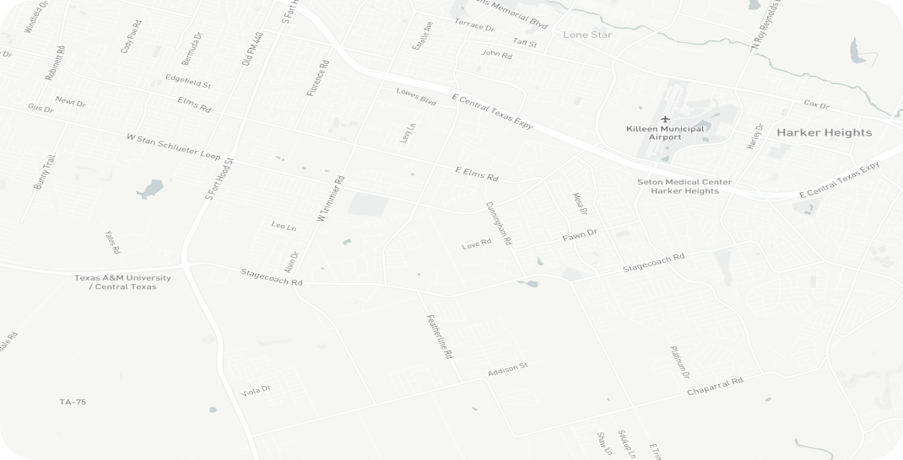

<section>
  <app-sidebar></app-sidebar>
  <div class="geomonitor">
    <app-header [pageTitle]="'Monitoramento Geográfico'"></app-header>
    <div class="image">
      
    </div>
  </div>
</section>